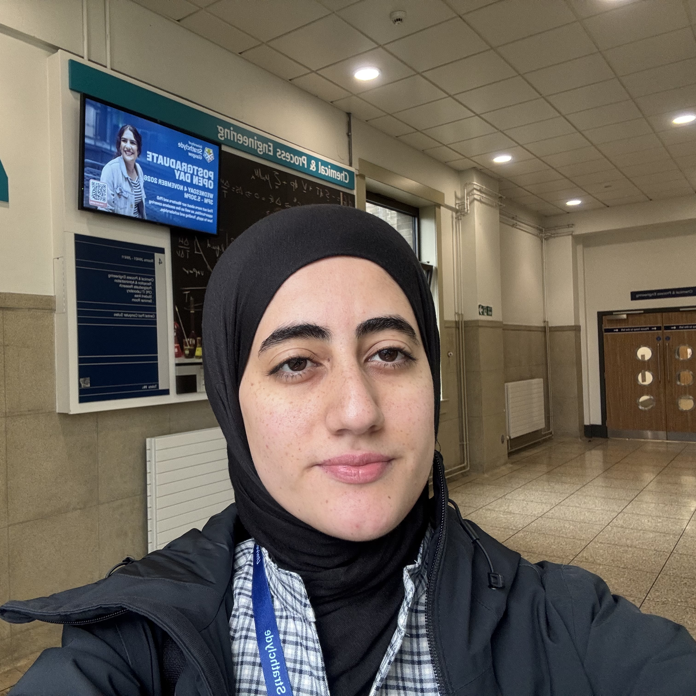
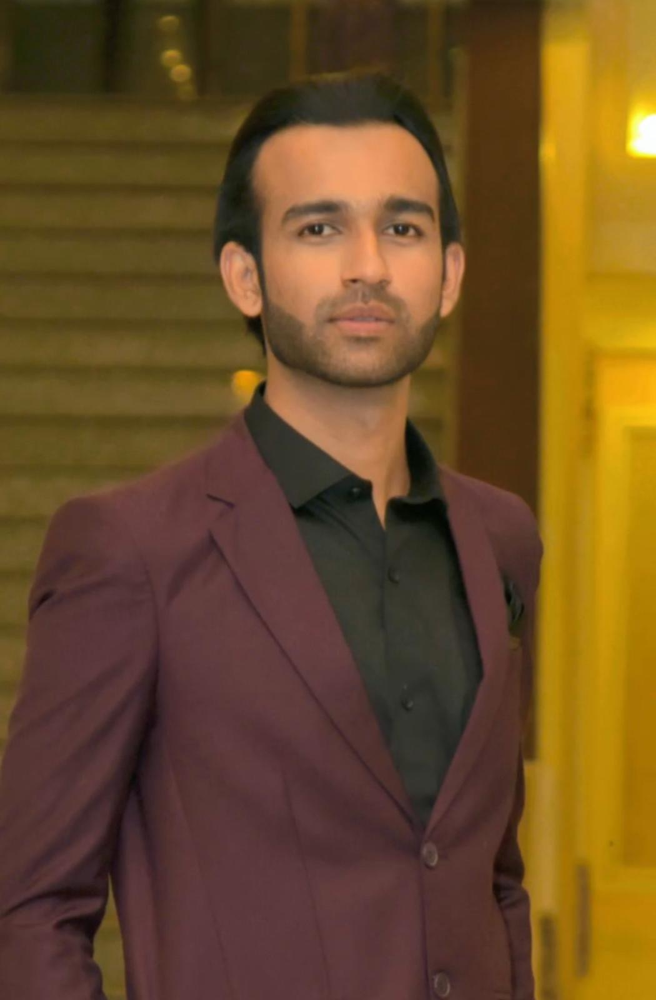
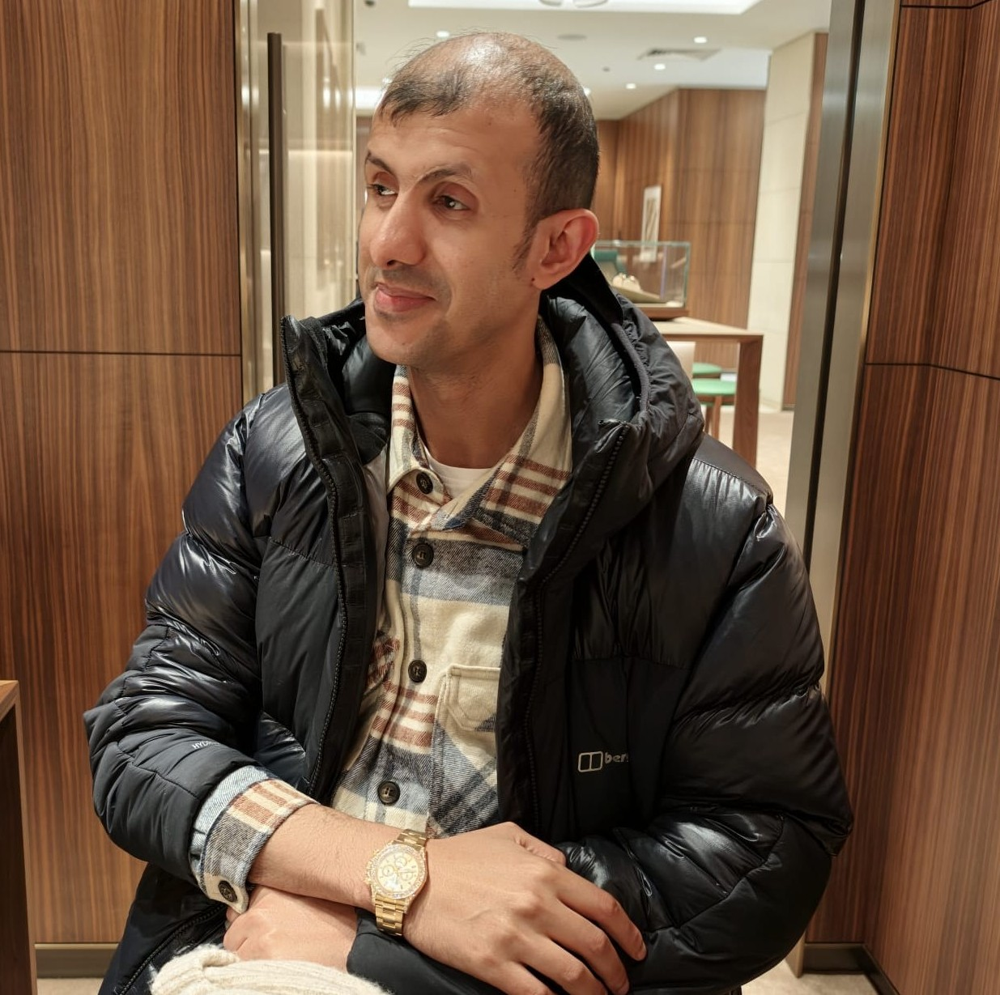

Dr Lewis MacDonald
Postdoctoral Research Associate
The people behind the research
Reader in Chemical and Process Engineering
University of Strathclyde · Glasgow, UK
I lead Biomass & Bioenergy Innovation Laboratory, developing sustainable bioenergy and resource-recovery technologies through experiments, CFD modelling, process simulation, and techno-economic and environmental assessments.
Postdoctoral Research Associate

Research Assistant

PhD Researcher

PhD Researcher

PhD Researcher

PhD Researcher

PhD Researcher

PhD Researcher

Visiting Scholar